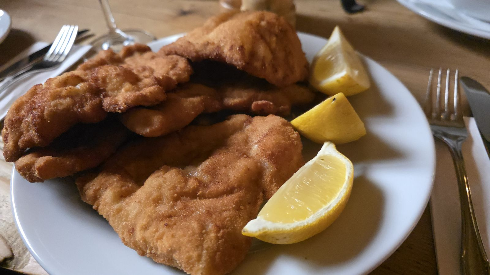
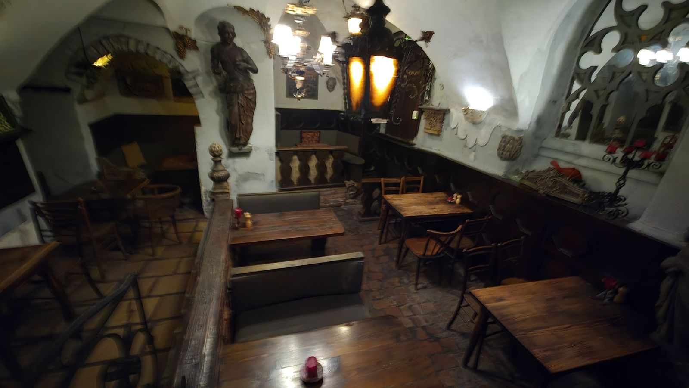
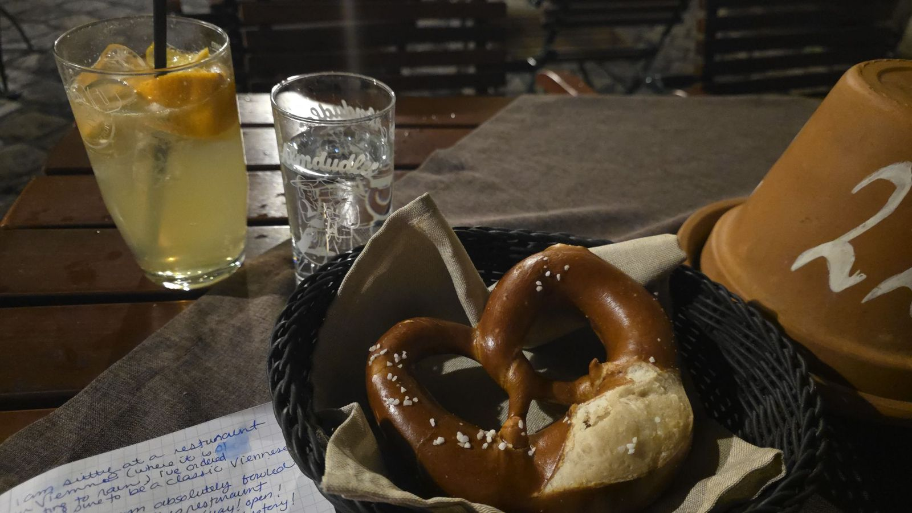
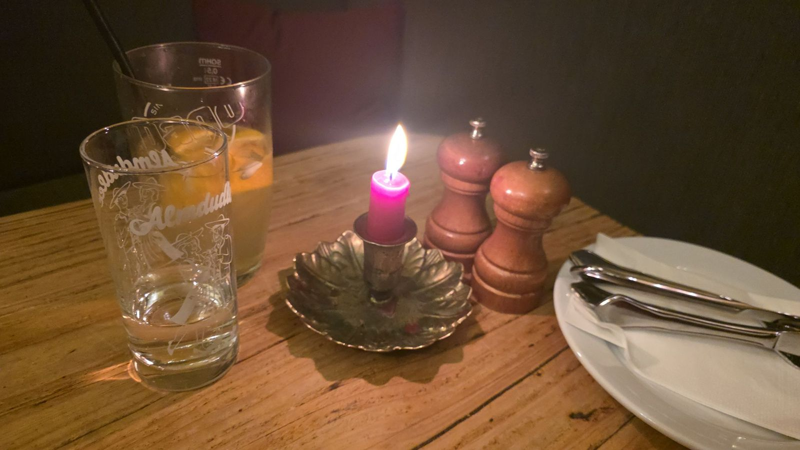
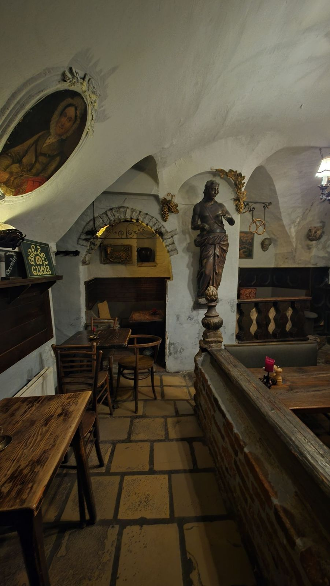
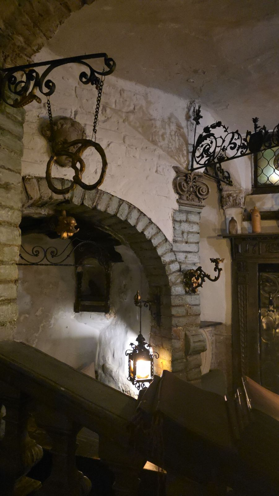
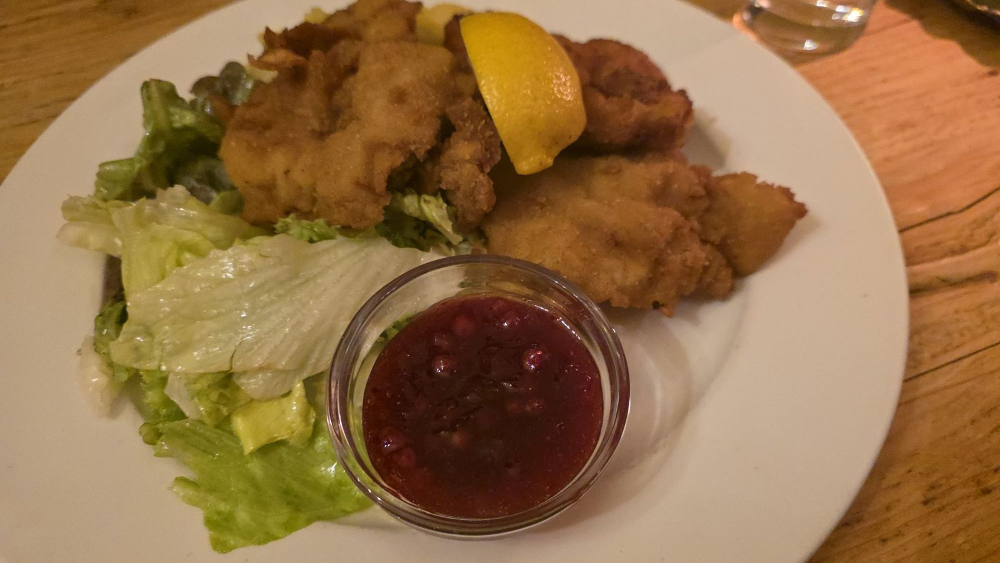
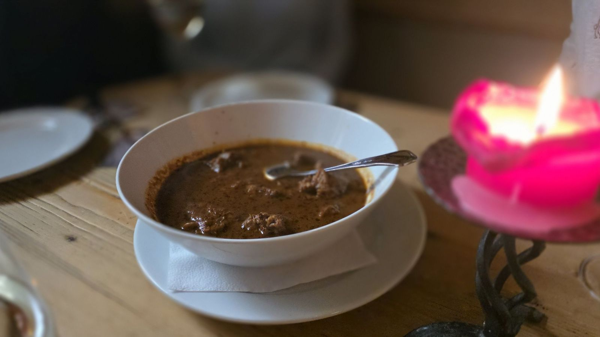
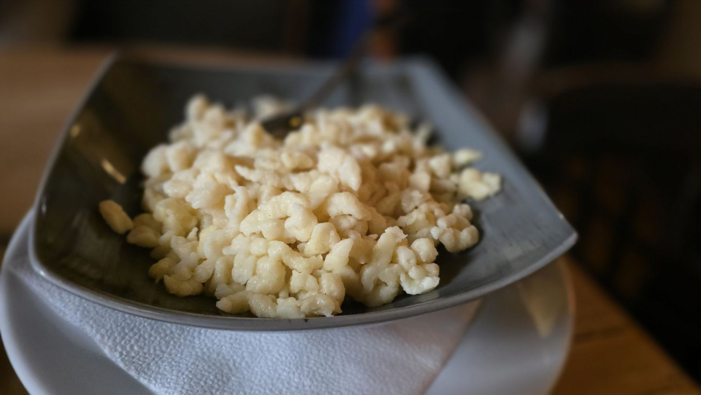
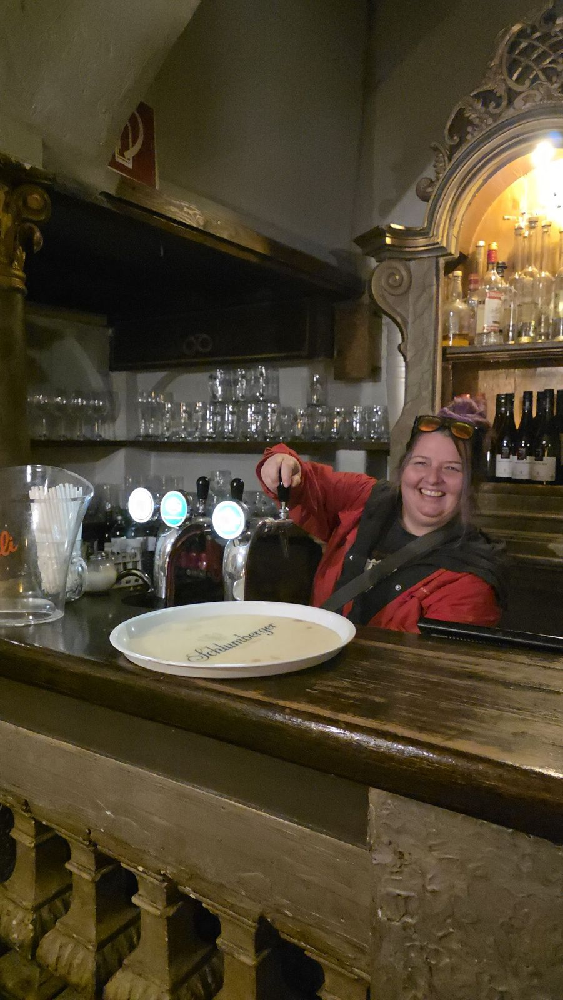

Journey 04 · Wien Note 5 of 8 Field Note
Vienna: A Wrong Turn

There is a special kind of travel misery that is not dramatic enough to make a good story and just uncomfortable enough to make you question your choices. It is not a missed flight or a lost passport, which can at least become their own kind of stressful adventure. It is smaller than that, and something that happens in cities all over the world.
It is a specific stone in the shoe that most travelers know well: being hungry on a holiday, in a city where everything is closed, with no cash, no way to get cash, and a GPS that has just confidently led you down the wrong street.
That was me, standing on a cobblestone street in Vienna, watching the Easter market pack up around me, unable to buy a single thing from any of the stalls closing down for the night, trying to decide if this counted as an adventure or just a mistake.
I took a wrong turn trying to find somewhere (anywhere!) that might be open and serving food late in the evening on Easter Sunday. And that is how I found the Lederhof.

From the outside, it would be easy to miss because the restaurant was down a narrow alleyway, out of sight from the streets running near by. It would be easy to walk right by the hidden alleyway and never even know you passed it. I only found it through luck, and because I was hungry and desperate and the door was open and there was light inside, I found the waitress and asked if I could get a seat so late in the evening.
I am so glad she found a spot for me.
I ordered without fully understanding the menu, trusting entirely in the principle that anything coming out of this kitchen was going to be worth eating. I had seen others dishes and their reactions, so I knew it would be hard to go wrong.

Initially, I sat outside. The night was cool but not yet cold and the alley was quiet despite the full resturaunt behind me. Food here is not rushed, and I enjoyed the opportunity to sit and reflect while nibbling on a giant pretzel and sipping at lemonade. At one point a small dog strolled by, dressed in a cheerleader outfit. Several minutes later, it returned, now with an elderly owner in tow wearing a matching outfit. Several old man came out from the restaurant, singing and laughing with each other.
Sitting outside, I noticed very quickly when it started to rain. There was a deep, long rumbling sound that I did not place as thunder until lightning lit up the sky, making the peaks of the surrounding buildings stand out in contrast. In short order, I was hustled inside and tucked into a corner with a new pretzel and fresh drink.
The room that received me was warm and low-ceilinged, the walls dark with age, the kind of dark that takes centuries to accumulate. Heavy wooden tables, candles, the smell of something extraordinary coming from a tiny kitchen I had just walked thru to escape the downpour. It felt less like a restaurant and more like a place where people had been eating and talking and laughing for a very, very long time.
Which, as it turned out, it was.
So, before the food arrived, I did what I always do when I find myself somewhere that feels like it has a story: I went to find it.

The Lederhof takes its name from the tanners whose guild called this corner of Vienna home for centuries. There were four small houses here once, clustered together, first mentioned in records in 1341. The other buildings were lost over time, destroyed and rebuilt as cities tend to do. The remaining building was restored in 1881 to fit the cityscape around it.
But here is the part of the story that surprised me the most:
The restaurant building itself has never been destroyed. It has stood, continuously, on this same ground for not just hundreds of years, but thousands. How? Because it was built on top of an ancient Roman shop. Not near Roman ruins. On top of them. The foundations go down four basements deep, further below ground than the building rising above it. And the lowest of those basements? It was once connected by a tunnel to the Hofburg Palace itself, before someone, at some point in the long intervening centuries, decided to wall it up.

After learning the story, I was amazed.
I had taken a wrong turn on Easter Sunday, hungry and cashless, and stumbled into a place where the floor beneath my feet had been someone’s floor since before the Middle Ages. Where emperors had perhaps walked through a tunnel now sealed behind ancient stone. Where 1341 (already nearly seven centuries ago) was not even the beginning of the story.
There is old. And then there is this. There is no American equivalent I can think of.

And then the food arrived.
I had ordered the schnitzel, because Vienna, and because it seemed like the right thing to do in a room that had been feeding people for the better part of two thousand years. What came to the table was not what I expected. It was more golden than others I have had, and instead of a single large piece or two, it was a pile of small fried meats. And it was considerably more extraordinary than I expected. It was the kind of schnitzel that makes you put down your fork just to appreciate what is happening in your mouth before you continue.

The home made cranberry sauce and potato salad were also delicious, but you can hardly compare the most perfect schnitzel to a potato salad fairly.
But even the schnitzel was over shadowed by the homemade dumplings and goulash.
So simple in theory but apparently life-changing in practice. I would have told you even hours vefore this meal that I did not eat goulash, but there was only a small bit left for the day, not even enough for a serving, and I am always up for trying new things.


The goulash was a dish that you want to eat slowly because you do not want it to end while simultaneously eating it far too fast. It tasted the way getting a warm hug from your grandma felt like when you were a kid. Its the kind of dish you think about for weeks afterward, and then find yourself factoring into future travel decisions. I am not being dramatic when I say that I would return to Vienna specifically for the goulash and dumplings here: its already on the itinerary.
I stayed longer than I meant to. That seems to be a theme in Vienna… the city has a way of making you forget you were supposed to be somewhere else.

Outside, Vienna continued being Vienna. Ancient and layered and completely indifferent to the fact that I had found it by accident. The rain had stopped for the moment, though the thunder still rumbled and lightning occasionally lit up the sky. But the rain puddles reflected the street lights and gave the city a magical, timeless feeling as I walked back to my hotel.
As I walked, I thought about the capital-P Planner, with her color-coded itinerary and her timed waypoints. She would have missed the Easter market closing down around her. She would have missed the wrong turn. She would have missed the tunnel to the Hofburg, sealed up and forgotten beneath her feet.
She would have had a very good trip.
But she would not have sat in a room built on Roman ruins on Easter Sunday, eating some of the best food of her life, wondering what other secrets the city would share.
Originally published at fieldnotesfromabroad.com/2026/04/13/vienna-a-wrong-turn/